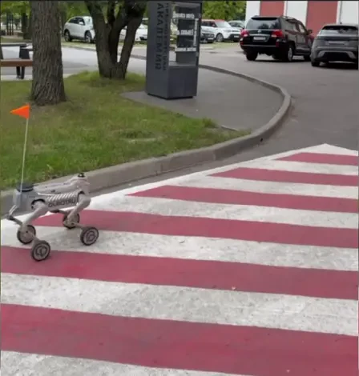

Автономный патруль кампуса
Территория около 40 000 м², робот Inchbot L1-W, маршрут около 450 м и примерно 4 обхода в будний день, с 14 по 28 сентября 2026 года. Робот распознавал людей и транспорт, госномера с привязкой к карте, курение и граффити, контролировал освещённость.
Кейс и расчёт окупаемостиPDF, 280 КБСкачать53обхода за две недели
≈25 кмпройдено
≈80 чавтономной работы
79нарушений выявлено